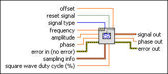
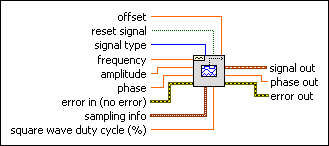

Basic Function Generator VI
Owning Palette: Waveform Generation VIs
Requires: Full Development System
Creates an output waveform based on signal type.

 Add to the block diagram Add to the block diagram |
 Find on the palette Find on the palette |
Owning Palette: Waveform Generation VIs
Requires: Full Development System
Creates an output waveform based on signal type.

| Add to the block diagram |
Find on the palette |
 |
offset is the DC offset of the signal. The default is 0.0. | ||||||||
 |
reset signal, if TRUE, resets the phase to the phase control value and the time stamp to zero. The default is FALSE. | ||||||||
 |
signal type is the type of waveform to generate.
|
||||||||
|
frequency is the frequency of the waveform in units of hertz. The default is 10. | ||||||||
|
amplitude is the amplitude of the waveform. The amplitude is also the peak voltage. The default is 1.0. | ||||||||
|
phase is the initial phase, in degrees, of the waveform. The default is 0. The VI ignores phase if reset signal is FALSE. | ||||||||
 |
error in describes error conditions that occur before this node runs. This input provides standard error in functionality. | ||||||||
 |
sampling info contains sampling information.
| ||||||||
|
square wave duty cycle is the percentage of time a square wave remains high versus low over one period. The VI uses this parameter only if the signal type is a square wave. The default is 50. | ||||||||
 |
signal out is the generated waveform. | ||||||||
 |
phase out is the phase of the waveform in degrees. | ||||||||
 |
error out contains error information. This output provides standard error out functionality. |
This VI remembers the time stamp of the previous waveform generated and continues to increment the time stamp from that point. It takes as inputs the type of waveform, number of samples, phase in, and the frequency of the waveform to be generated in Hz.